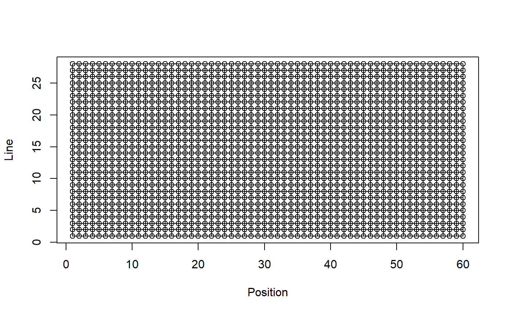
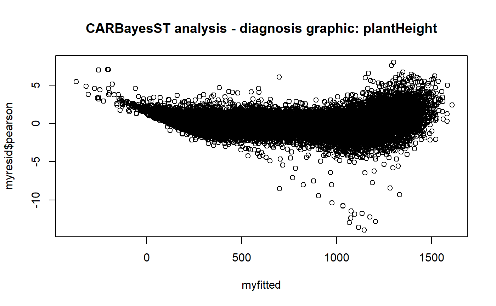

outlierCARBayesST.Rda function to detect outlier point in time-course using a CARBayesST modelling
outlierCARBayesST(modelin, datain, threshold, trait)
| modelin | a CARBayesST object |
|---|---|
| datain | input dataframe of parameters used in the CARBayesST modelling |
| threshold, | numeric threshold for influence with standardized residuals |
| trait, | character, trait of interest to model (example plantHeight...) |
a plot of fitted vs. residuals and a dataset with a column identifying the outlier points
CARBayesST, ST.CARanova
# \donttest{ data(plant1) library(dplyr) mydata<-filter(plant1,!is.na(plant1$thermalTime)) str(mydata)#> 'data.frame': 45342 obs. of 14 variables: #> $ Ref : Factor w/ 1680 levels "manip1_10_10_WW",..: 131 131 131 131 131 131 131 131 131 131 ... #> $ experimentAlias: Factor w/ 1 level "manip1": 1 1 1 1 1 1 1 1 1 1 ... #> $ Day : Factor w/ 42 levels "2013-02-01","2013-02-02",..: 3 4 5 6 7 9 9 10 11 12 ... #> $ potAlias : int 1 1 1 1 1 1 1 1 1 1 ... #> $ scenario : Factor w/ 2 levels "WD","WW": 2 2 2 2 2 2 2 2 2 2 ... #> $ genotypeAlias : Factor w/ 274 levels "11430_H","A310_H",..: 165 165 165 165 165 165 165 165 165 165 ... #> $ repetition : int 1 1 1 1 1 1 1 1 1 1 ... #> $ Line : int 1 1 1 1 1 1 1 1 1 1 ... #> $ Position : int 1 1 1 1 1 1 1 1 1 1 ... #> $ thermalTime : num 1.29 2.65 3.98 5.32 6.66 ... #> $ plantHeight : num 140 151 213 239 271 ... #> $ leafArea : num 0.018 0.019 0.0208 0.0222 0.0235 ... #> $ biovolume : num 0.253 0.62 1.201 1.68 3.396 ... #> $ Repsce : Factor w/ 15 levels "1_WD","1_WW",..: 2 2 2 2 2 2 2 2 2 2 ...test<-fitCARBayesST(datain=mydata,xvar="thermalTime", trait="plantHeight",k=2, graphDist=TRUE,burnin=10,n.sample=110, formulaModel=as.formula(plantHeight~scenario+genotypeAlias), typeModel="anova",verbose=FALSE)#> [1] 22.35558#> used (Mb) gc trigger (Mb) max used (Mb) #> Ncells 3935847 210.2 6893817 368.2 3935847 210.2 #> Vcells 68236062 520.6 203368829 1551.6 68236062 520.6test2<-outlierCARBayesST(modelin=test[[1]],datain=test[[2]],threshold=4, trait="plantHeight")# }